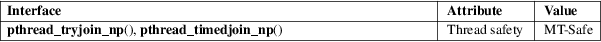

pthread_tryjoin_np, pthread_timedjoin_np − try to join with a terminated thread
POSIX threads library (libpthread, −lpthread)
#define
_GNU_SOURCE /* See feature_test_macros(7) */
#include <pthread.h>
int
pthread_tryjoin_np(pthread_t thread, void
**retval);
int pthread_timedjoin_np(pthread_t thread,
void **retval,
const struct timespec *abstime);
These functions operate in the same way as pthread_join(3), except for the differences described on this page.
The pthread_tryjoin_np() function performs a nonblocking join with the thread thread, returning the exit status of the thread in *retval. If thread has not yet terminated, then instead of blocking, as is done by pthread_join(3), the call returns an error.
The pthread_timedjoin_np() function performs a join-with-timeout. If thread has not yet terminated, then the call blocks until a maximum time, specified in abstime, measured against the CLOCK_REALTIME clock. If the timeout expires before thread terminates, the call returns an error. The abstime argument is a timespec(3) structure, specifying an absolute time measured since the Epoch (see time(2)).
On success, these functions return 0; on error, they return an error number.
These functions can fail with the same errors as pthread_join(3). pthread_tryjoin_np() can in addition fail with the following error:
|
EBUSY |
thread had not yet terminated at the time of the call. |
pthread_timedjoin_np() can in addition fail with the following errors:
|
EINVAL |
abstime value is invalid (tv_sec is less than 0 or tv_nsec is greater than 1e9). |
ETIMEDOUT
The call timed out before thread terminated.
pthread_timedjoin_np() never returns the error EINTR.
For an explanation of the terms used in this section, see attributes(7).

GNU; hence the suffix "_np" (nonportable) in the names.
glibc 2.3.3.
The pthread_timedjoin_np() function measures time by internally calculating a relative sleep interval that is then measured against the CLOCK_MONOTONIC clock instead of the CLOCK_REALTIME clock. Consequently, the timeout is unaffected by discontinuous changes to the CLOCK_REALTIME clock.
The following code waits to join for up to 5 seconds:
struct timespec
ts;
int s;
...
if
(clock_gettime(CLOCK_REALTIME, &ts) == −1) {
/* Handle error */
}
ts.tv_sec += 5;
s =
pthread_timedjoin_np(thread, NULL, &ts);
if (s != 0) {
/* Handle error */
}
clock_gettime(2), pthread_exit(3), pthread_join(3), timespec(3), pthreads(7)